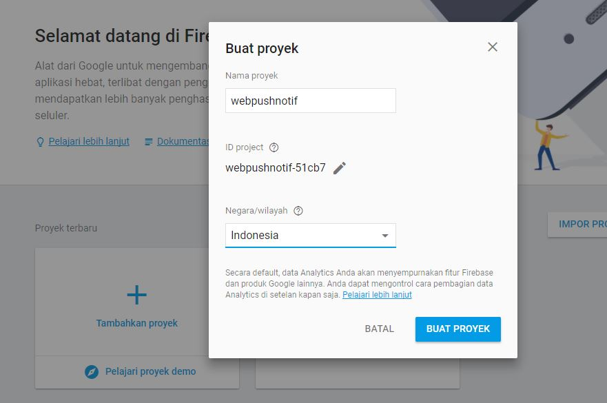
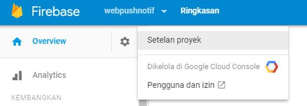
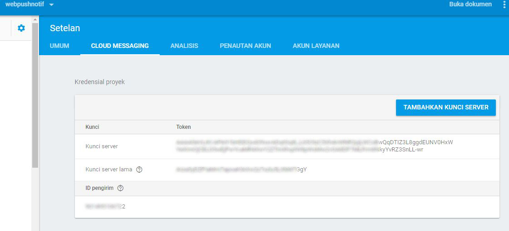
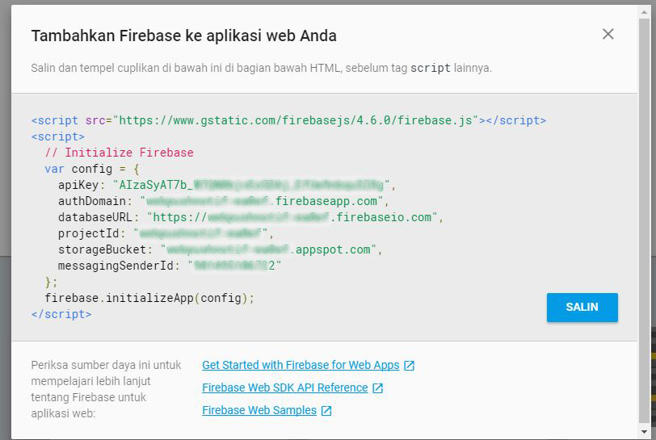
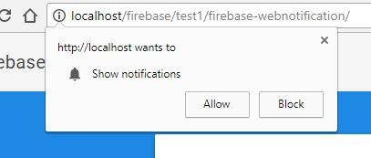
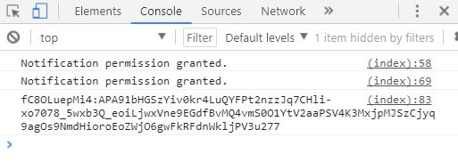
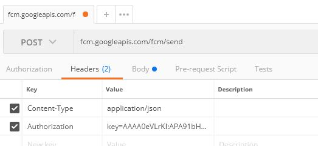
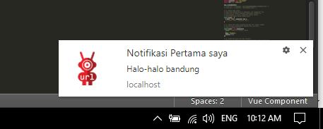

Penulis Cerita: @karebetconnec
Bagaimana Cara Menggunakan FCM (Firebase Cloud Messaging) untuk Web-push Notification
Beberapa hal penting yang perlu di presiapkan.
- Project di Firebase google
- Permission Notification
- HTTPS untuk live domain atau localhost(bisa berjalan di localhost tanpa memerlukan protocol HTTPS)
Kita mulai dari langkah pertama.
1. Buat Project di Firebase
Langkah-langkah membuat project di Firebase Google dan selanjutnya untuk mendapatkan Server Key dan Sender ID untuk langkah pengiriman pesan nanti.
- Buka Console Firebase Google .
- Buat Project. 
- Setalah membuat project, Selanjutnya dapatkan Server Key dan ID Sender di tab Cloud Messaging.  
2. Buat Permission Notification
-
Buat file-file berikut.
http://localhost |--test/ | |index.html | |sw.js (update) |--firebase-messaging-sw.js |--manisfest.json -
Buat Source Code index.html dan salin codescript yang di dapat dari Project Firebase.

<html> <head> <script src="https://www.gstatic.com/firebasejs/4.6.0/firebase.js"></script> <script> // Initialize Firebase var config = { apiKey: "API____KEY", authDomain: "AUT____DOMAIN.firebaseapp.com", databaseURL: "https://DATABASE______URL.firebaseio.com", projectId: "PROJECT____ID", storageBucket: "STORAGE_____BUCKET.appspot.com", messagingSenderId: "SENDER____ID" }; firebase.initializeApp(config); </script> </head> <body> </body> </html> -
Buat file firebase-messaging-sw.js
/* File ini di letakkan di root/ */ // Give the service worker access to Firebase Messaging. // Note that you can only use Firebase Messaging here, other Firebase libraries // are not available in the service worker. importScripts('https://www.gstatic.com/firebasejs/3.9.0/firebase-app.js'); importScripts('https://www.gstatic.com/firebasejs/3.9.0/firebase-messaging.js'); // Initialize the Firebase app in the service worker by passing in the // messagingSenderId. firebase.initializeApp({ 'messagingSenderId': 'SENDER____ID' }); // Retrieve an instance of Firebase Messaging so that it can handle background // messages. const messaging = firebase.messaging(); messaging.setBackgroundMessageHandler(function(payload) { console.log('[firebase-messaging-sw.js] Received background message ', payload); // Customize notification here const notificationTitle = 'Background Message Title'; const notificationOptions = { body: 'Background Message body.', icon: 'http://lokasi/project/icons/icon.png' }; return self.registration.showNotification(notificationTitle,notificationOptions); }); -
Buat file manisfest.json
{ "//": "Some browsers will use this to enable push notifications.", "//": "It is the same for all projects, this is not your project's sender ID", "gcm_sender_id": "901495106722" } -
Buat Request Permission Notification , letakkan javascript di bawah ini di bawah codescript yang di dapat dari Project Firebase.
messaging.requestPermission().then(function() { console.log('Notification permission granted.'); }).catch(function(err) { console.log('Unable to get permission to notify.', err); }); messaging.getToken().then(function(currentToken) { if (currentToken) { console.log(currentToken); } else { console.log('No Instance ID token available. Request permission to generate one.'); updateUIForPushPermissionRequired(); } }).catch(function(err) { console.log('An error occurred while retrieving token. ', err); }); messaging.onTokenRefresh(function() { messaging.getToken().then(function(refreshedToken) { console.log('Token refreshed.'); console.log(refreshedToken); }).catch(function(err) { console.log('Unable to retrieve refreshed token ', err); }); }); messaging.onMessage(function(payload) {console.log("Message received. ", payload);}); /* script di atas di dapat dari https://firebase.google.com/docs/web/ */ -
Jalankan index.html dan buka console pada browser.
Akan mendapatkan permintaan notifikasi seperti ini.

klik allow untuk mendapatkan token.
Lihat pada bagian console pada browser

token di gunakan untuk tujuan saat mengirimkan Web-Push Notification
3. Mengirimkan Notifikasi
Ada banyak cara untuk mengirimkan notifikasi , dengan CURL atau dengan cara lain, yang penting Header dan yang di kirim benar.
URL untuk mengirim notifikasi ke Firebase Cloud Messaging : https://fcm.googleapis.com/fcm/send
Header dengan methode POST:
Content-Type:application/json
Authorization:key=SERVER_KEY_DARI_CLOUD_MESSAGING
dan body raw yang di kirim
{
"notification": {
"title": "Notifikasi Pertama saya",
"body": "Halo-halo bandung",
"icon":"http://lokasi/project/icons/icon.png",
"click_action": "http://lokasi-web-yang-di-tuju-bila-di-klik"
},
"to": "###TOKEN_YANG_DI_DAPAT_DARI_REQUEST_NOTIFICATION###"
}
Contoh Mengirim dengan Aplikasi Postman


Dan akan menghasilkan Notifikasi di pojok kanan bawah 